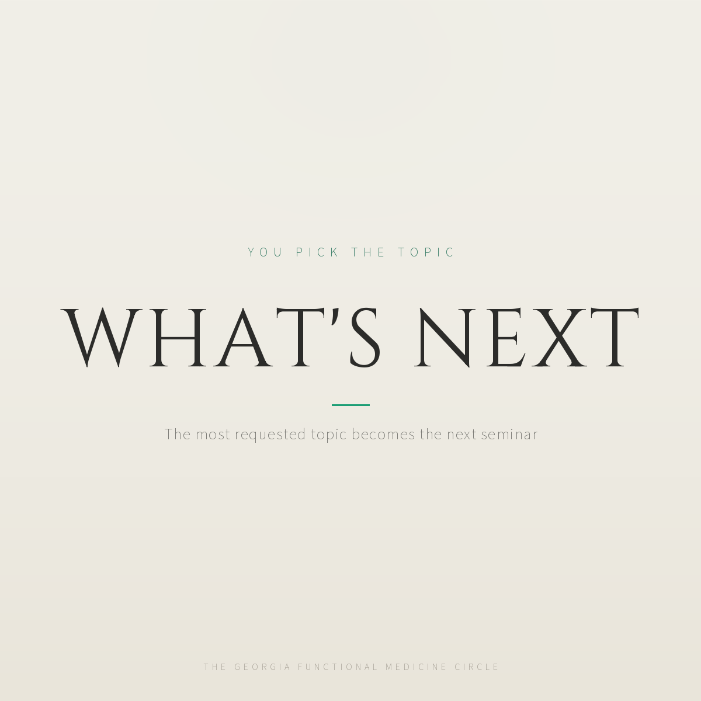

The rewrite
A planning question for everyone.
After the August seminar at Life University, we are planning what comes next, and we want the topics to come from you, not from us.
What should we cover? A deep dive that would actually change how you practice: gut protocols, peptides round two, thyroid, women's health, testing strategy, practice growth, something else?
Comment with one topic, or DM me the word TOPIC and the one you want if you would rather not post it publicly. The most requested one becomes the next seminar, and we will bring the research summaries into this group either way. We read every answer.
What is queued now (old ending)
A planning question for everyone.
After the August seminar at Life University, we are planning what comes next, and we want the topics to come from you, not from us.
What should we cover? A deep dive that would actually change how you practice: gut protocols, peptides round two, thyroid, women's health, testing strategy, practice growth, something else?
Comment with one topic. The most requested one becomes the next seminar, and we will bring the research summaries into this group either way. We read every answer.